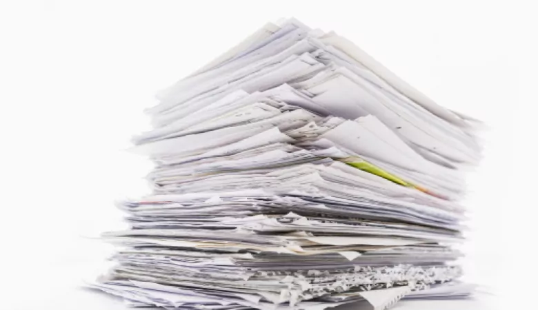
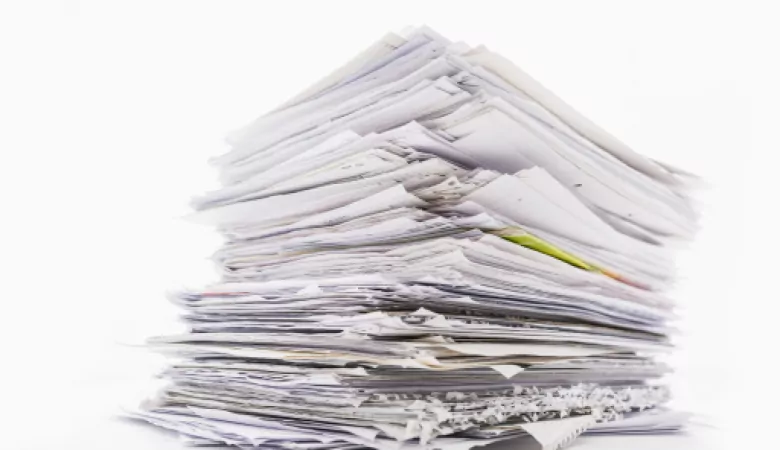
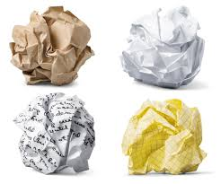
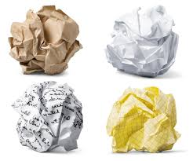

Your Waste Material is Paper.
 

 

Paper waste, such as newspapers, magazines, and packaging materials, is one of the most common types of waste. While paper is biodegradable, large amounts of discarded paper contribute to deforestation and landfill waste. If not recycled, paper waste leads to the unnecessary cutting of trees and increased environmental pollution.
Recycling paper is the best way to reduce waste and save natural resources. It can be reused to make new paper products, reducing the need for fresh raw materials. Proper disposal and recycling help lower pollution, save energy, and protect forests, making it an eco-friendly choice.
Back To Home Page